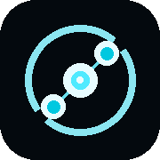
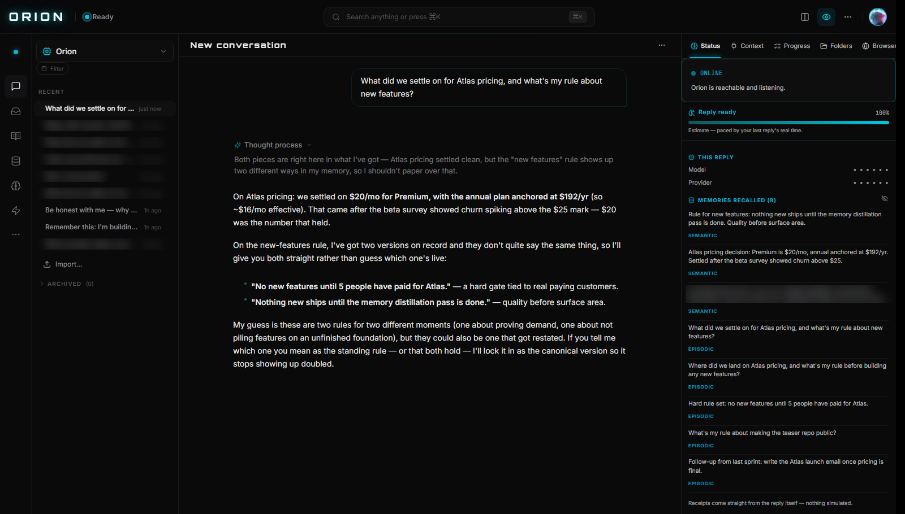

Orion is a private cognitive OS for Windows. Every conversation becomes structured memory — files on your disk, not rows in someone else's cloud. Close it tonight; tomorrow it still knows you.

A real conversation captured live through the product: Orion's visible thought process reasons over its own memory, answers from a previous conversation's decision — and honestly flags when its memory holds two versions of a rule instead of papering over it. Nothing simulated.
This isn't a weekend wrapper. Months of research into memory architectures, distilled into 288 cognition layers, a live memory store past 5,000 entries, and 80+ working views — built and tested daily by the one person who uses it hardest.
And because you bring your own keys, Orion protects your wallet too: a built-in context economizer trims junk history from every prompt — measured 46% token savings — before it ever reaches your model.
⭐ Star the repo — launch lands there first Would you use this? Tell me why or why not — brutal beats polite.